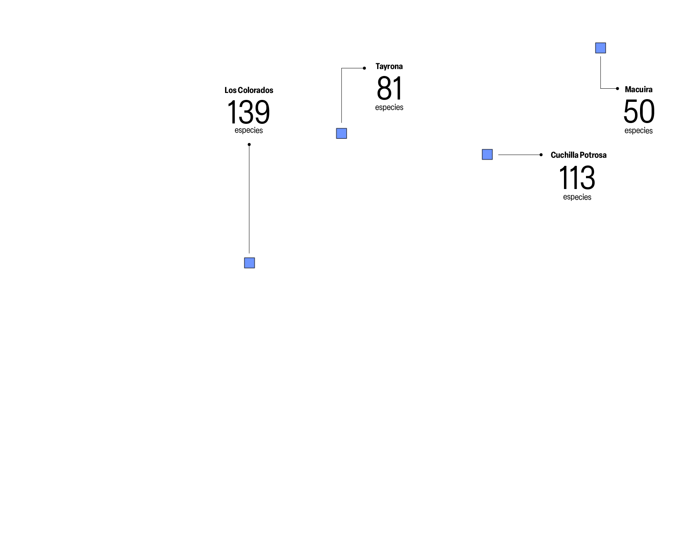
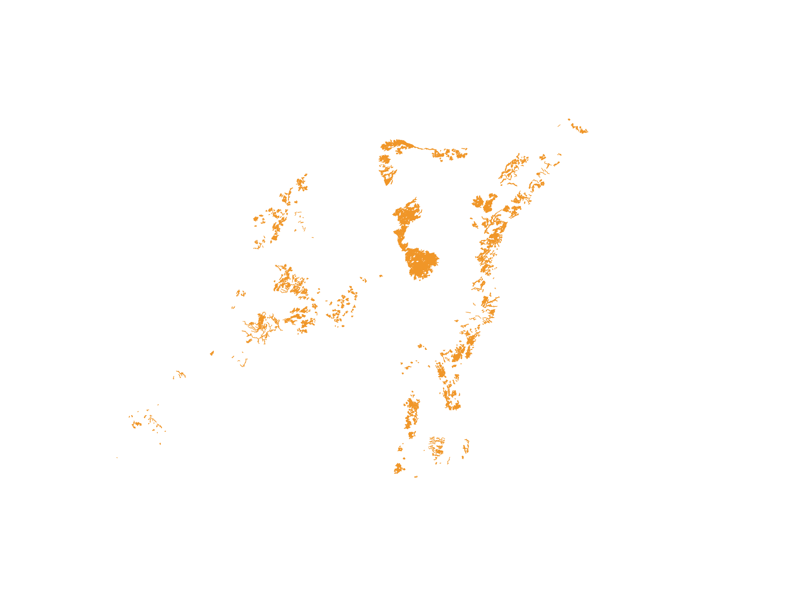
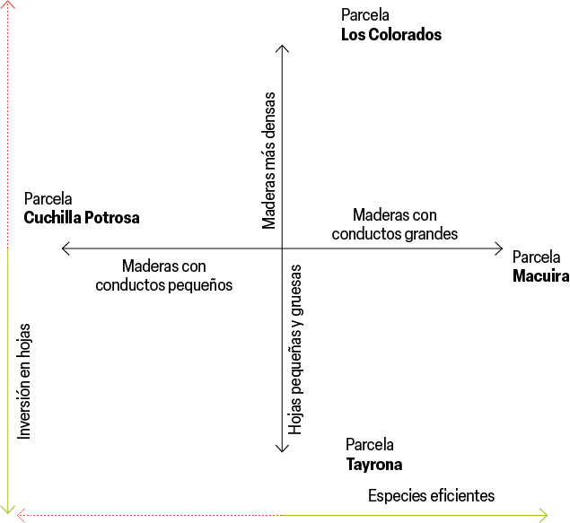

Número de especies identificadas en parcelas permanentes de bosque seco tropical
Bosque seco tropical
Parcela permanente

 
Comportamiento de las estrategias funcionales en las parcelas evaluadas
